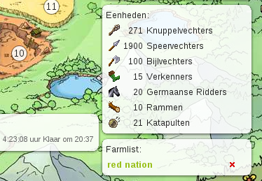
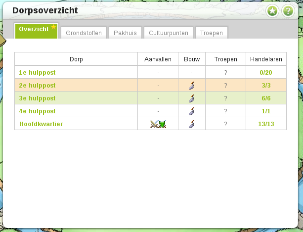

Currently the travian++ extension has the following features:
Initially the farmlist will be empty. On any village page, i.e. a page
with position_details.php in the address, an extra link is
added:
If you click on this link, the village page is bookmarked on the resources page:
Note that the farmlist is synchronised with your other Google Chrome instances. So whether you are behind your laptop or desktop computer, you will see the same list.
The Graph will show the resource levels in the near future (24 hours)
of each village. It can be found by navigating to
Statistics -> User -> Grafiek.
The graph is based on the following:
The overview page adds some usefull icons. It shows troop movements of all your villages and indicates which villages are building and which are not. All icons will automatically change when troops arrive or when work has finished.
There are two ways to obtain Travian++
--enable-easy-off-store-extension-install. The extension
can now be downloaded and installed from my
Dropbox
account. You will be asked for permission. If you aggree on
everything, then it is installed correctly and can be used. Updates
will be downloaded automatically by Google Chrome.
git clone https://github.com/richardbrinkman/travianplusplus.git
Customize and control Google Chrome
Developer mode is checkedLoad unpacked extension buttongit pull.